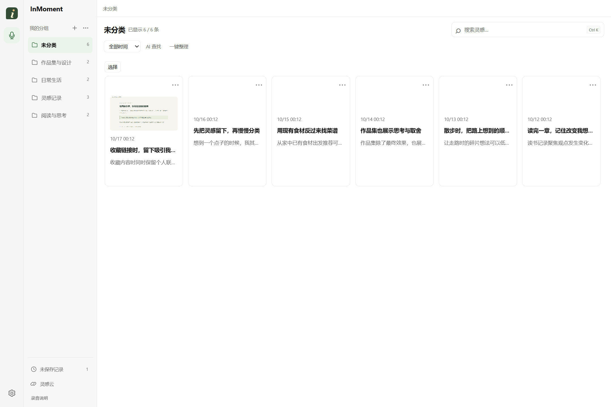

需求与功能范围
- 最初只想保存阅读时冒出的想法。试用后发现，还需要留下触发想法的页面和当时的表达。
- 首个版本选择 Windows 桌面端，设计了长按录音、松开暂停、继续录音和保存的操作。
- 语音转写、摘要、分组建议和描述搜索使用 AI；原始音频与转写文字保留，方便核对。
- 区分本地处理和云端调用，并为截图参与 AI 整理设置单独授权。
不只是记住说了什么，也留下为什么会想到。
每一次灵感，都有迹可循。
阅读或浏览网页时，长按右键即可开始录音，并保存当前窗口截图。之后可以查看录音与截图，再用 AI 生成摘要、整理分组或搜索记录。
01 / 产品与交互
录音时不需要填写标题或选择分组，新记录可以直接保存。回顾时能查看原文、截图和音频，也可以调用 DeepSeek 生成摘要和分组建议。

未指定分组的记录保存在“未分类”中，点击卡片即可打开详情。
演示中的记录、摘要和分组为预设示例；网页、设计画布与 PDF 为演示素材，录音使用合成音源。
02 / 我在项目里做了什么
我负责产品方向、录音与整理流程、交互设计和功能验收。代码编写和自动化测试借助 AI 编程助手完成，语音转写、摘要和检索使用现成模型。
03 / 几个设计取舍
录入时尽量减少操作；涉及批量整理和删除时，先显示结果或确认信息。以下是三个主要设计选择。
要求先选分组会打断记录，因此新内容默认进入“未分类”。长按右键开始录音，松开后暂停，需要补充时再点击“继续”。
未分类记录会逐渐积累，因此在回顾页面增加了多选归组和一键整理。
只按已有分组归类，可能把不同主题混在一起；每条记录都新建分组，又会产生太多组。因此先逐条生成摘要，再比较这一批记录，提出可以共用的分组。
建议按组展示，并列出各组包含的记录。确认前，可以调整分组或取消单条建议。
例如搜索“上个月关于做菜的想法”，先在本地按时间和语义索引筛选候选记录，再交给云端模型排序，无需发送全部记录。
代价是本地模型增加安装体积；好处是索引可以复用，每次发送给云端的记录也更少。
模型分工、请求流程和评测方法见AI 方案与评测计划里。
04 / PRD 节选
新版 PRD 从用户问题出发，逐项写出用户故事、产品决策和验收条件。这里选取录音、整批整理与阅读归组三组需求，说明操作边界与预期结果。
US-01–06、08 · P0。使用者可以停顿后继续表达，所有片段属于同一草稿，最后明确决定保存或丢弃。
US-17–20 · P1。使用者可以控制整理范围与费用，按组检查、修改或取消建议，确认后再归组。
US-09–15 · P0，采用建议见 US-19 · P1。使用者按分组、记录、详情连续阅读，也能多选归组、合并或删除分组。
上述流程已有自动回归与合成资料检查；真实 AI 效果、宿主兼容性和外部使用体验仍待验证。
05 / 版本迭代
v0.1.0 先实现录音与保存；后续版本陆续增加回顾、搜索和批量管理。点击版本号可查看具体改动及原因。
先为每条记录生成摘要，再对整批记录提出共享分组建议。同时加入分组多选、合并和删除，并支持完整展开整理预览。
这次调整主要解决分组过多或过于笼统的问题，让相关记录能够归在一起。
版本记录包含新增功能、交互调整及对应的问题。阅读三次关键迭代 ↗
06 / 产品演示
视频展示在当前窗口启动录音、查看原文和截图、确认分组建议，以及批量整理记录的操作。
90 秒 · 无音轨演示 · 真实界面与操作标注
浏览网页、设计稿或 PDF 时，长按右键打开录音浮窗；松开后暂停，点击“继续”可以补充录音。
音频保留当时的表达，截图记录所处页面。回顾时可以一起查看，再生成摘要或整理分组。
07 / 目前进展与下一步
目前已有可运行的 Windows 桌面原型，并完成主要功能的自动化检查。尚未开展正式的外部用户研究，也没有真实搜索召回评测和任务耗时统计。
已完成
待验证
08 / 项目文档
这里整理了产品需求、AI 方案、版本记录、测试说明和演示材料，可按需查看。
录音、批量整理和阅读布局的需求说明及验收条件。
产品需求 完整需求文档问题、方案、用户故事、实现与测试决策等七部分。
产品思路 产品案例产品背景、个人职责及主要设计决策。
AI 应用设计 AI 方案与评测计划本地与云端模型的分工、调用流程及评测计划。
产品迭代 三次迭代三次关键交互调整，包括发现的问题和改动内容。
演示准备 演示分镜与讲解稿产品演示的镜头安排、操作步骤和配音说明。
项目交流 面试说明项目介绍要点、设计决策及常见问题说明。
发布准备 发布材料说明发布所需文件、待办事项和版本记录维护说明。
项目入口 README项目概况、功能介绍及本地运行方法。
版本记录 更新记录v0.1.0 至 v0.10.0 的功能更新与交互调整。
开发记录 MVP 验证记录测试环境、检查方法和已覆盖的功能。